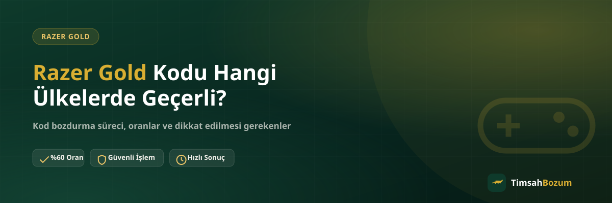

Razer Gold kodu elinde olan birçok kişi, kodu bozdurmadan önce "bu kod sadece belirli ülkelerde mi geçerli, elimdeki kod Türkiye'de işleme alınır mı" sorusunu soruyor. Bu merak hem hediye olarak gelen kodlar hem de yurt dışı mağazalardan satın alınan kodlar için geçerli. Bu yazıda ülke bilgisinin kod için ne anlama geldiğini ve bu durumun bozdurma işlemine nasıl yansıdığını açıklıyoruz.
Razer Gold Kodunun Ülke Bilgisi Ne Anlama Gelir?
Razer Gold, farklı ülkelerde farklı mağaza ve dağıtım kanalları üzerinden satılan bir hediye kartı/kod sistemi. Bir kod satın alındığı mağazaya veya platforma bağlı olarak belirli bir bölgeyle ilişkilendirilebilir. Bu ilişki, kodun hangi hesaplarda kullanılabileceğini belirleyen teknik bir ayrımdır; kodun kendisinin sahte veya geçersiz olduğu anlamına gelmez.
Kodumun Hangi Ülkeye Ait Olduğunu Nasıl Anlarım?
Çoğu zaman kodu satın aldığın mağazanın, uygulamanın veya hediye kartının üzerindeki bölge bilgisi bu konuda ipucu verir. Kod bir hediye olarak elinize geçtiyse ve kaynağını bilmiyorsanız, bu bilgi her zaman net olmayabilir. Böyle bir durumda net bir cevap aramak yerine, kodu WhatsApp üzerinden paylaşıp bozdurma işleminin başlatılabilir olup olmadığını teyit etmek en pratik yol.
Türkiye Dışından Gelen Bir Kod Burada Bozdurulur mu?
Kodun hangi ülkeden geldiği, TimsahBozum'da bozdurma işlemini başlı başına engelleyen bir kriter değildir. Önemli olan kodun geçerli ve kullanılmamış olması. Bu yüzden yurt dışından hediye gelen veya farklı bir mağazadan satın alınmış bir Razer Gold kodun olsa bile, işlemi başlatmadan önce "bu ülkeden gelen kod kabul edilir mi" diye tahmin yürütmek yerine doğrudan WhatsApp'tan sormak en net cevabı verir.
Global Kod ile Bölgeye Özel Kod Arasındaki Fark Nedir?
Bazı Razer Gold kodları daha geniş bir kullanım alanına sahip olacak şekilde satışa çıkarken, bazıları belirli bir mağaza veya bölgeye bağlı olarak sunulur. Bu fark, kodun hangi oyun hesaplarında veya platformlarda harcanabileceğini etkiler. Ancak bozdurma tarafında ikisi de aynı mantıkla işler: kod tabanlı bir hizmet olduğu için kodun tam değeri tek seferde değerlendirilir, kısmi bozum söz konusu değildir.
Ülke Bilgisi Yanlış veya Belirsizse İşlem Durur mu?
Ülke bilgisinin net olmaması işlemi otomatik olarak iptal etmez; sadece teyit sürecinde bir adım daha gerektirebilir. Kodu paylaştığında, karşındaki hat kodu değerlendirip sonucu sana iletir. Belirsizlik varsa bunu olduğu gibi belirtmen, "büyük ihtimalle bu ülkeden" gibi tahminlerde bulunmandan daha sağlıklı bir ilerleme sağlar.
Yurt Dışından Hediye Gelen Kod Güvenilir mi?
Arkadaşından veya bir platformdan yurt dışı kaynaklı olarak hediye aldığın bir kodun güvenilirliği, geldiği ülkeden bağımsız olarak kodun kullanılmamış ve doğru karakterlerle paylaşılmış olmasına bağlı. Kodu aldığın kaynağa güveniyorsan ve kod daha önce hiçbir hesapta kullanılmadıysa, ülke bilgisi bu güvenilirliği değiştiren bir unsur değildir.
Birden Fazla Ülkeden Kodum Varsa Ne Yapmalıyım?
Farklı kaynaklardan gelen birden fazla Razer Gold kodun varsa ve bunların bölge bilgisi farklıysa, hepsini tek mesajda ayrı ayrı belirterek paylaşman süreci hızlandırır. Her kod kendi değeri üzerinden ayrı değerlendirilir, bu yüzden hangi kodun nereden geldiğini net belirtmek karışıklığı önler.
Kod Üzerindeki Para Birimi Ülke Hakkında Bilgi Verir mi?
Razer Gold kartlarının çoğunda değeri gösteren bir para birimi sembolü (örneğin TL, USD veya EUR) basılıdır. Bu sembol, kodun hangi mağaza için hazırlandığına dair bir ipucu verebilir, çünkü farklı ülkelerin mağazaları genelde kendi para birimiyle fiyatlandırma yapar. Ancak bu tek başına kesin bir kanıt değildir; bazı kartlar farklı kanallarla farklı ülkelere de dağıtılabilir. Bu yüzden para birimi sembolünü bir referans noktası olarak görüp, net sonucu yine WhatsApp üzerinden teyit etmen en sağlıklısı.
Ülke Bilgisini Önceden Belirtmek İşlemi Neden Hızlandırır?
Kodunu paylaşırken bildiğin ülke veya mağaza bilgisini de ilk mesajında belirtmen, karşındaki hattın değerlendirmeyi daha hızlı yapmasını sağlar. Hiçbir bilgi vermeden sadece kodu paylaşıp "bu nereden geçerli acaba" diye beklemek yerine, elinde ne varsa (kartın üzerindeki yazı, satın alındığı mağaza, hediye geldiği platform) kısaca aktarman süreci bir adım öne taşır. Bu bilgi eksik veya tahmini olsa bile paylaşman, hiç paylaşmamaktan daha faydalıdır; eksik kısmı karşı taraf tamamlayıp sana geri döner.
Yurt Dışı Seyahatinde Alınan Kod da Aynı Şekilde Değerlendirilir mi?
Yurt dışı seyahati sırasında yerel bir markette veya oyun mağazasında satın alınan bir Razer Gold kodu da, Türkiye'de alınan bir kodla aynı mantıkla bozdurma sürecine girer. Farklı ülkede satın alınmış olması, kodu bir kerede değerlendiren kod tabanlı yapıyı değiştirmez. Önemli olan, kodun seyahat sırasında kullanılmamış olarak elinde kalması ve karakterlerin dönüşte eksiksiz paylaşılabilmesidir. Seyahat sonrası kodu uzun süre saklamak yerine, dönüşte kısa sürede bozdurma sürecini başlatman kodun geçerliliğiyle ilgili bir sorun yaşama ihtimalini de azaltır. Kodu yanında getirdiğin ülkeyi mesajında belirtmen de teyit sürecini kısaltan basit bir detaydır.
İlgili Yazılar
- Razer Gold Kodu Bölgeye Özel mi? Bilmen Gerekenler
- Razer Gold Hediye Kartı Geldi, Ne Yapmalıyım?
- Razer Gold Kodu Nasıl Bozdurulur? Adım Adım Rehber
Elindeki Razer Gold kodunun hangi ülkeden geldiğinden emin değilsen bile, en hızlı ve net cevabı Razer Gold bozdurma hattımızdan alabilirsin. Kodunu paylaşarak güncel oranı ve işlemin başlayıp başlayamayacağını WhatsApp üzerinden hemen teyit edebilirsin.